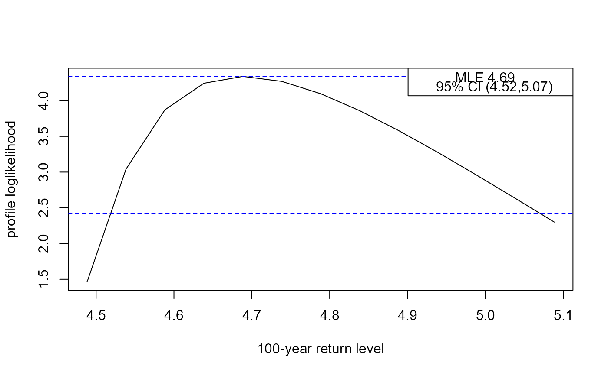
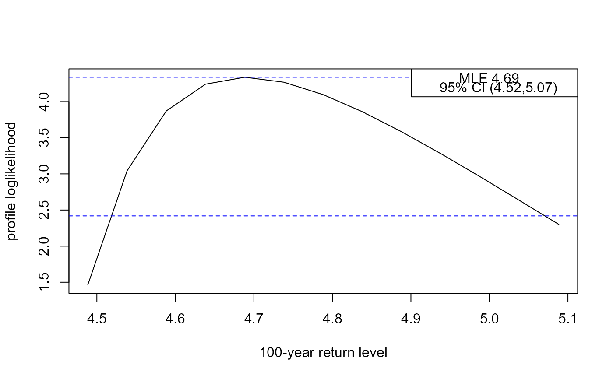

Return Level Inferences for Stationary Extreme Value Models
Source:R/return_level.R
return_level.RdCalculates point estimates and confidence intervals for m-year
return levels for stationary extreme value fitted model objects
returned from alogLik. Two types of interval may be returned:
(a) intervals based on approximate large-sample normality of the maximum
likelihood estimator for return level, which are symmetric about the point
estimate, and (b) profile likelihood-based intervals based on an (adjusted)
loglikelihood.
Usage
return_level(
x,
m = 100,
level = 0.95,
npy = 1,
prof = TRUE,
inc = NULL,
type = c("vertical", "cholesky", "spectral", "none")
)Arguments
- x
An object inheriting from class
"lax"returned fromalogLik.- m
A numeric scalar. The return period, in years.
- level
A numeric scalar in (0, 1). The confidence level required for the confidence interval for the
m-year return level.- npy
A numeric scalar. The (mean) number of observations per year. Setting this appropriately is important. See Details.
- prof
A logical scalar. Should we calculate intervals based on profile loglikelihood?
- inc
A numeric scalar. Only relevant if
prof = TRUE. The increment in return level by which we move upwards and downwards from the MLE for the return level in the search for the lower and upper confidence limits. If this is not supplied thenincis set to one hundredth of the length of the symmetric confidence interval for return level.- type
A character scalar. The argument
typeto the function returned byadjust_loglik, that is, the type of adjustment made to the independence loglikelihood function in creating an adjusted loglikelihood function. See Details and Value inadjust_loglik.
Value
A object (a list) of class "retlev", "lax" with the
components
- rl_sym,rl_prof
Named numeric vectors containing the respective lower 100
level% limit, the MLE and the upper 100level% limit for the return level. Ifprof = FALSEthenrl_profwill be missing.- rl_se
Estimated standard error of the return level.
- max_loglik,crit,for_plot
If
prof = TRUEthen these components will be present, containing respectively: the maximised loglikelihood; the critical value and a matrix with return levels in the first column (ret_levs) and the corresponding values of the (adjusted) profile loglikelihood (prof_loglik).- m,level
The input values of
mandlevel.- call
The call to
return_level.
Details
At present return_level only supports GEV models.
Care must be taken in specifying the input value of npy.
GEV models: it is common to have one observation per year, either because the data are annual maxima or because for each year only the maximum value over a particular season is extracted from the raw data. In this case,
npy = 1, which is the default. If instead we extract the maximum values over the first and second halves of each year thennpy = 2.Binomial-GP models:
npyprovides information about the (intended) frequency of sampling in time, that is, the number of observations that would be observed in a year if there are no missing values. If the number of observations may vary between years thennpyshould be set equal to the mean number of observations per year.
Supplying npy for binomial-GP models.
The value of npy (or an equivalent, perhaps differently named,
quantity) may have been set in the call to fit a GP model.
For example, the gpd.fit() function in the ismev package
has a npy argument and the value of npy is stored in the
fitted model object. If npy is supplied by the user in the call to
return_level then this will be used in preference to the value
stored in the fitted model object. If these two values differ then no
warning will be given.
For details of the definition and estimation of return levels see the Inference for return levels vignette.
The profile likelihood-based intervals are calculated by
reparameterising in terms of the m-year return level and estimating
the values at which the (adjusted) profile loglikelihood reaches
the critical value logLik(x) - 0.5 * stats::qchisq(level, 1).
This is achieved by calculating the profile loglikelihood for a sequence
of values of this return level as governed by inc. Once the profile
loglikelihood drops below the critical value the lower and upper limits are
estimated by interpolating linearly between the cases lying either side of
the critical value. The smaller inc the more accurate (but slower)
the calculation will be.
References
Coles, S. G. (2001) An Introduction to Statistical Modeling of Extreme Values, Springer-Verlag, London. doi:10.1007/978-1-4471-3675-0_3
See also
plot.retlev for plotting the profile loglikelihood
for a return level.
Examples
# GEV model -----
got_evd <- requireNamespace("evd", quietly = TRUE)
if (got_evd) {
library(evd)
# An example from the evd::fgev documentation
set.seed(4082019)
uvdata <- evd::rgev(100, loc = 0.13, scale = 1.1, shape = 0.2)
M1 <- fgev(uvdata)
adj_fgev <- alogLik(M1)
# Large inc set here for speed, sacrificing accuracy
rl <- return_level(adj_fgev, inc = 0.5)
summary(rl)
rl
plot(rl)
}
 #> lower mle upper
#> 5.337685 6.992529 10.354765
got_ismev <- requireNamespace("ismev", quietly = TRUE)
if (got_ismev) {
library(ismev)
# An example from the ismev::gev.fit documentation
gev_fit <- gev.fit(revdbayes::portpirie, show = FALSE)
adj_gev_fit <- alogLik(gev_fit)
# Large inc set here for speed, sacrificing accuracy
rl <- return_level(adj_gev_fit, inc = 0.05)
summary(rl)
rl
plot(rl)
}

#> lower mle upper
#> 4.518708 4.688429 5.070614
# Binomial-GP model -----
if (got_ismev) {
library(ismev)
data(rain)
# An example from the ismev::gpd.fit documentation
rain_fit <- gpd.fit(rain, 10, show = FALSE)
adj_rain_fit <- alogLik(rain_fit, binom = TRUE)
# Large inc set here for speed, sacrificing accuracy
rl <- return_level(adj_rain_fit, inc = 2.5)
summary(rl)
rl
plot(rl)
}
#> lower mle upper
#> 76.00807 87.01603 103.60984
if (got_ismev) {
# Use Newlyn seas surges data from the exdex package
surges <- exdex::newlyn
u <- quantile(surges, probs = 0.9)
newlyn_fit <- gpd.fit(surges, u, show = FALSE)
# Create 5 clusters each corresponding approximately to 1 year of data
cluster <- rep(1:5, each = 579)[-1]
adj_newlyn_fit <- alogLik(newlyn_fit, cluster = cluster, binom = TRUE,
cadjust = FALSE)
rl <- return_level(adj_newlyn_fit, inc = 0.02)
rl
# Add inference about the extremal index theta, using K = 1
adj_newlyn_theta <- alogLik(newlyn_fit, cluster = cluster, binom = TRUE,
k = 1, cadjust = FALSE)
rl <- return_level(adj_newlyn_theta, inc = 0.02)
rl
}
#>
#> Call:
#> return_level(x = adj_newlyn_theta, inc = 0.02)
#>
#> MLE and 95% confidence limits for the 100-year return level
#>
#> Normal interval:
#> lower mle upper
#> 0.7489 0.8424 0.9359
#>
#> Profile likelihood-based interval:
#> lower mle upper
#> 0.7593 0.8424 0.9450
#> lower mle upper
#> 5.337685 6.992529 10.354765
got_ismev <- requireNamespace("ismev", quietly = TRUE)
if (got_ismev) {
library(ismev)
# An example from the ismev::gev.fit documentation
gev_fit <- gev.fit(revdbayes::portpirie, show = FALSE)
adj_gev_fit <- alogLik(gev_fit)
# Large inc set here for speed, sacrificing accuracy
rl <- return_level(adj_gev_fit, inc = 0.05)
summary(rl)
rl
plot(rl)
}

#> lower mle upper
#> 4.518708 4.688429 5.070614
# Binomial-GP model -----
if (got_ismev) {
library(ismev)
data(rain)
# An example from the ismev::gpd.fit documentation
rain_fit <- gpd.fit(rain, 10, show = FALSE)
adj_rain_fit <- alogLik(rain_fit, binom = TRUE)
# Large inc set here for speed, sacrificing accuracy
rl <- return_level(adj_rain_fit, inc = 2.5)
summary(rl)
rl
plot(rl)
}
#> lower mle upper
#> 76.00807 87.01603 103.60984
if (got_ismev) {
# Use Newlyn seas surges data from the exdex package
surges <- exdex::newlyn
u <- quantile(surges, probs = 0.9)
newlyn_fit <- gpd.fit(surges, u, show = FALSE)
# Create 5 clusters each corresponding approximately to 1 year of data
cluster <- rep(1:5, each = 579)[-1]
adj_newlyn_fit <- alogLik(newlyn_fit, cluster = cluster, binom = TRUE,
cadjust = FALSE)
rl <- return_level(adj_newlyn_fit, inc = 0.02)
rl
# Add inference about the extremal index theta, using K = 1
adj_newlyn_theta <- alogLik(newlyn_fit, cluster = cluster, binom = TRUE,
k = 1, cadjust = FALSE)
rl <- return_level(adj_newlyn_theta, inc = 0.02)
rl
}
#>
#> Call:
#> return_level(x = adj_newlyn_theta, inc = 0.02)
#>
#> MLE and 95% confidence limits for the 100-year return level
#>
#> Normal interval:
#> lower mle upper
#> 0.7489 0.8424 0.9359
#>
#> Profile likelihood-based interval:
#> lower mle upper
#> 0.7593 0.8424 0.9450